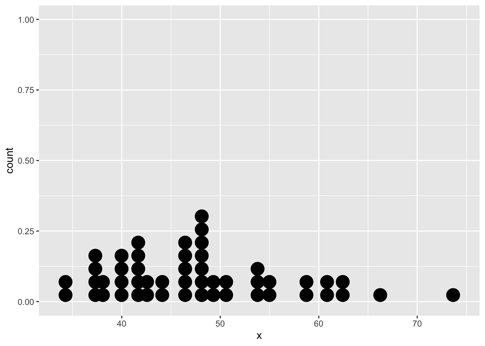
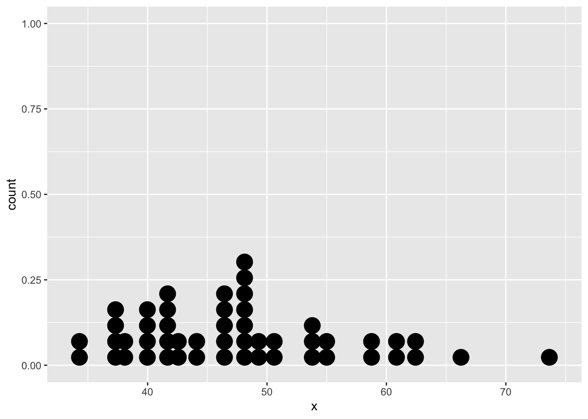
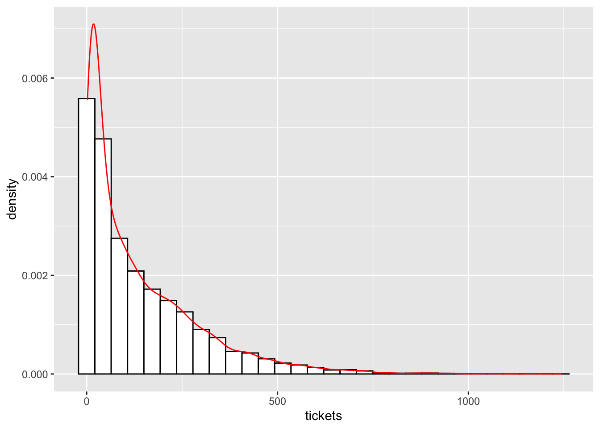
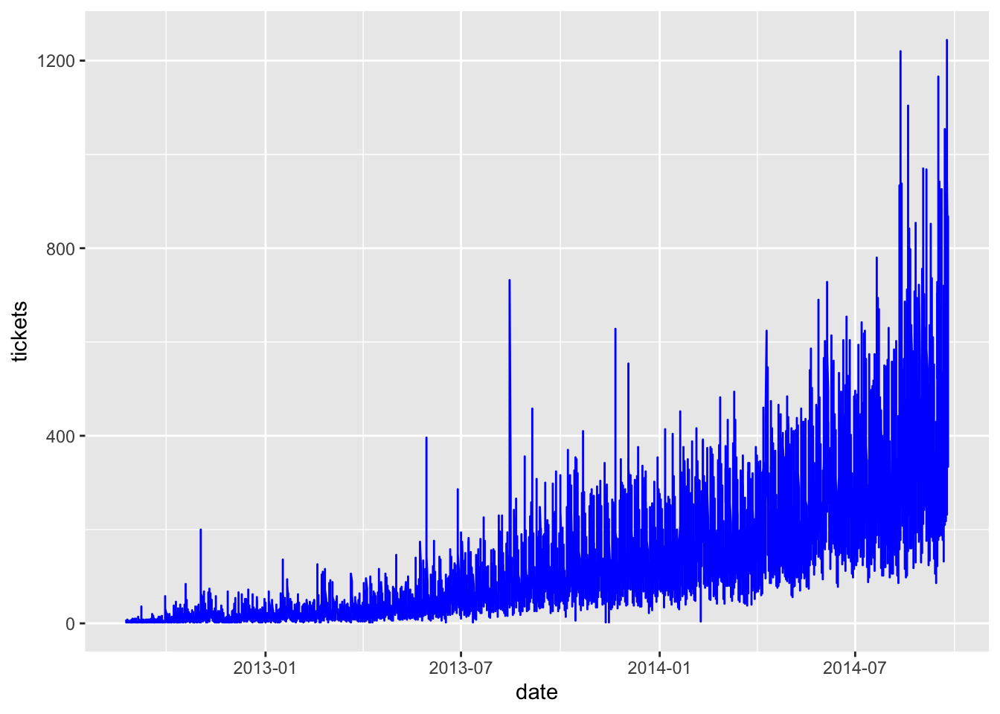

library(dplyr)
library(ggplot2)
df = tibble(x = rnorm(50, mean = 50, sd = 10))
ggplot(df, aes(x = x)) + geom_dotplot()
Trying to understand a bit better the whole idea behidn MLE.
When the data you are using for modelling are not following a normal distribution, you can’t really use the traditional methods of regressions that are assuming data are normally distributed.
To avoid that, some data transformation are possible (log transformation, square root, reciprocal functions)… sometimes, that even still doesn’t work.
How should we model such data so that the basic assumptions of the model are not violated? How about modeling this data with a different distribution rather than a normal one? If we do use a different distribution, how will we estimate the coefficients?
That’s when MLE comes in.
Let’s take an easy example
library(dplyr)
library(ggplot2)
df = tibble(x = rnorm(50, mean = 50, sd = 10))
ggplot(df, aes(x = x)) + geom_dotplot()
These dots comes from a distribution where we know the parameters (mean = 50, sd = 10). In real life, we usually do not know the parameters of the distribution of our data. So we have to estimate them.
We can estimate the parameters of the data (in our case from the vector x). First we have to make an assumptions about the data distribution. Here we assume the data are normally distributed and we get
print(mean(df$x))[1] 47.58077print(sd(df$x))[1] 8.790446Both parameters are close enough from the real values (50 and 10).
Another way to get the parameters values is to use MLE: a method for estimating population parameters (such as the mean and variance for Normal, rate (lambda) for Poisson, etc.) from sample data such that the probability (likelihood) of obtaining the observed data is maximized.
Given the observed data and a model of interest, we need to find the one Probability Density Function/Probability Mass Function (f(x|θ)), among all the probability densities that are most likely to have produced the data.
To solve that problem, we defined a likelihood function: \[L(x; \theta) = f(x | \theta)\]
We want to find the \(\theta\) such that we maximize the likelihood.
Then, we assume that the observations are iid (independent and identically distributed random variables from the same probability distribution \(f_0\))
\[L(x;\theta) = f(x_1, x_2, \cdots x_n | \theta) = f_0(x_1|\theta) \cdot f_0(x_2|\theta) \cdot f(x_3|\theta) \cdots f_0(x_n|\theta)\]
Taking the log both side \[log(L(x;\theta)) = log[f_0(x_1|\theta) \cdot f_0(x_2|\theta) \cdot f(x_3|\theta) \cdots f_0(x_n|\theta)]\] Using properties of log \[log(L(x;\theta)) = log[f_0(x_1|\theta)] + log[f_0(x_2|\theta)] + log[f(x_3|\theta)] + log[f_0(x_n|\theta)]\] Or in other words \[LL(x;\theta) = \sum_{i=1}^n log[f_0(x_i|\theta)]\] Finding the maxima of the log-likelihood function is an unconstrained non-linear optimization problem.
In MLE, we can assume that we have a likelihood function L(θ;x), where θ is the distribution parameter vector, and x is the set of observations. We are interested in finding the value of θ that maximizes the likelihood with given observations (values of x).
When the model is assumed to be Gaussian, as in the examples above, the MLE estimates are equivalent to the ordinary least squares method.
Let’s assume we have a large sample size of n-observation which can be treated as emanating from a Poison Distribution \(P~P0(\mu_i)\). Let’s also assume that we want that mean \(\mu_i\) to depend of a vector of explanatory varibales \(x_i\).
We can then state that \[\mu_i = x_i \cdot \theta\] As \(\mu_i\) has been assumed to be the mean of a Poisson distribution,
To put it in practice… Use data from ticket sale (18,000+ observations) of a date and a count variable (an integer that represents the number of ticket sold)
library(readr)
library(dplyr)
library(ggplot2)
library(lubridate)
df <- read_csv('../data_others/tickets_sale.csv')
glimpse(df)Rows: 18,288
Columns: 2
$ Datetime <chr> "25-08-2012 00:00", "25-08-2012 01:00", "25-08-2012 02:00", "…
$ Count <dbl> 8, 2, 6, 2, 2, 2, 2, 2, 6, 2, 2, 6, 4, 2, 6, 2, 2, 2, 2, 2, 2…df <- df |>
mutate(date = as_date(Datetime, format = '%d-%m-%Y %H:00'), tickets = Count,
weekdays = weekdays(date), month = month(date),
age = as.integer(round((date - as_date('2012-08-25'))/7)))
str(df)tibble [18,288 × 7] (S3: tbl_df/tbl/data.frame)
$ Datetime: chr [1:18288] "25-08-2012 00:00" "25-08-2012 01:00" "25-08-2012 02:00" "25-08-2012 03:00" ...
$ Count : num [1:18288] 8 2 6 2 2 2 2 2 6 2 ...
$ date : Date[1:18288], format: "2012-08-25" "2012-08-25" ...
$ tickets : num [1:18288] 8 2 6 2 2 2 2 2 6 2 ...
$ weekdays: chr [1:18288] "Saturday" "Saturday" "Saturday" "Saturday" ...
$ month : num [1:18288] 8 8 8 8 8 8 8 8 8 8 ...
$ age : int [1:18288] 0 0 0 0 0 0 0 0 0 0 ...ggplot(df, aes(x = tickets)) +
geom_histogram(aes(y = ..density..), colour = 1, fill = 'white') +
geom_density(colour = 'red')Warning: The dot-dot notation (`..density..`) was deprecated in ggplot2 3.4.0.
ℹ Please use `after_stat(density)` instead.`stat_bin()` using `bins = 30`. Pick better value with `binwidth`.
library(ggplot2)
ggplot(df, aes(x = date, y = tickets)) +
geom_line(colour = 'blue')
BFGS is an optimization algorithm to find a minimum (like gradient descent is). It is a second order algorithm, aka… it used the second derivatives. BFGS is often the default algorithm used in optimization for MLE estimations (aka find the minimum of MLE function).
We could code the negative log likelihood as follow:
nll <- function(theta0, theta1) {
x = df$age[-idx]
y = df$tickets[-idx]
mu = exp(theta0 + x * theta1)
#mu = exp(theta0 + x*theta1)
#-sum(y * log(mu) - mu)
-sum(y* (log(mu)) - mu)
}
idx <- sample.int(n = nrow(df), size = round(0.25 * nrow(df)), replace = FALSE)
# calling the mle function to calculate the parameters
param_est <- stats4::mle(minuslogl = nll, start = list(theta0 = 2, theta1 = 1))
print(param_est)
Call:
stats4::mle(minuslogl = nll, start = list(theta0 = 2, theta1 = 1))
Coefficients:
theta0 theta1
2.67494905 0.03268266 idx <- caret::createDataPartition(df$tickets, p=0.25,list=FALSE)import yfinance as yf
import pandas as pd
yo = yf.download('^TNX')
[*********************100%%**********************] 1 of 1 completedyo.to_csv('../data_stock_fmpr/^TNX.csv', index = True)